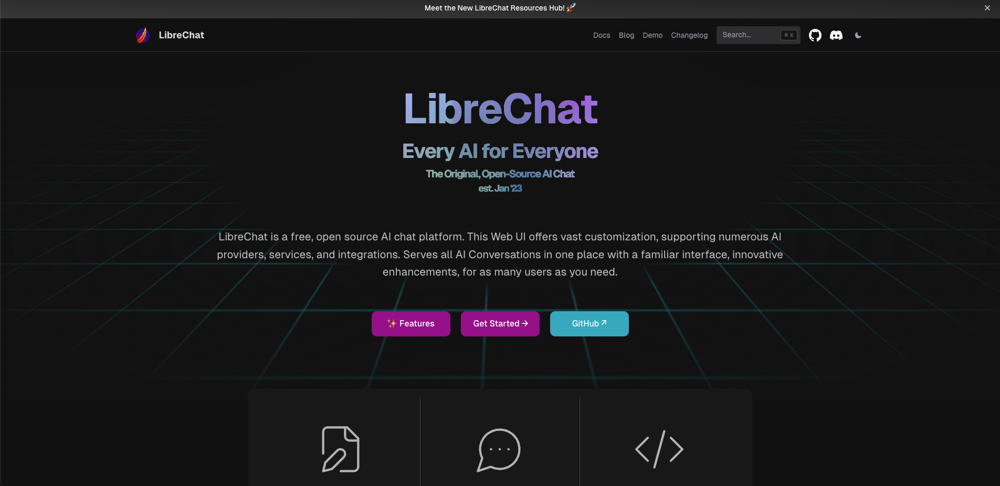

LibreChat
 项目首页
项目首页
LibreChat是一个集成了最新AI技术的聊天平台，拥有多种语言界面、多模态功能、AI模型选择和丰富的定制选项

 如何部署在线 LibreChat
如何部署在线 LibreChat
什么是 LibreChat
- LibreChat 的特色在于它整合了多种人工智能模型，增强了原始客户端的功能，如对话和消息搜索、提示模板和插件。它使用户无需选择 ChatGPT Plus，而可以使用免费或按需付费的 API。LibreChat 欢迎用户的贡献、克隆和分叉，以增强这个高级聊天机器人平台的功能。
功能列表
-
用户界面(UI)特点: LibreChat 提供了与 ChatGPT 相似的界面，包括暗模式、流式传输功能，以及截至2023年11月的最新更新。
-
多模态聊天功能: 用户可以上传并通过 GPT-4 和 Gemini Vision 分析图像。同时，支持更多文件类型和正在开发中的助手 API 集成。
-
多语言用户界面: 支持多种语言，包括英语、中文、德语、西班牙语、法语、意大利语、波兰语、巴西葡萄牙语、俄语、日语、瑞典语、韩语、越南语、繁体中文、阿拉伯语、土耳其语和荷兰语。
-
AI 模型选择: 用户可以选择不同的 AI 模型，如 OpenAI API、Azure、BingAI、ChatGPT、Google Vertex AI 和 Anthropic (Claude) 以及其他插件。
-
创建、保存和分享自定义预设: 用户可以创建、保存和分享自定义的聊天环境预设。
-
编辑、重提交和继续消息与对话分支: 支持编辑、重提交和延续消息的功能，使对话可以分支发展。
-
导出对话功能: 可以将对话导出为截图、Markdown、文本、JSON 等格式。
-
搜索功能: 支持搜索所有消息和对话。
-
插件支持: 包括网络访问、图像生成（DALL-E-3 等）的插件。
-
多用户支持和安全认证: 提供多用户支持、安全认证以及监管和代币消费工具。
-
多种部署选项和完全开源: 支持配置代理、反向代理、Docker 等多种部署选项，软件是完全开源的。